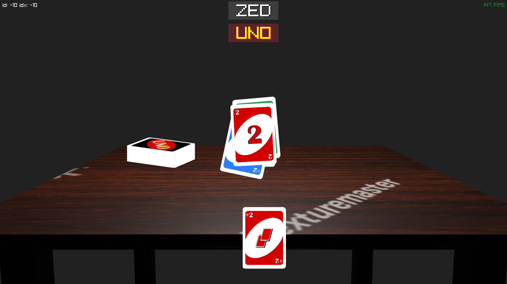

Ubisoft's UNO game is not very good. I have set out to make a worse game.
I'm building ZED (name chosen because we have UNO and DOS, and as such, should keep to three letters) because I need a fun programming project this summer and UNO is an incredibly simple game that I've so far found easy to implement. The current (as of commit 3a35124, time of writing) is not really UNO, as there are no other players and your only ability is to throw cards into the pile according to the rules of UNO, and draw cards from an infinite but poorly-shuffled deck. Here is a screenshot of the game:

The background scene was modelled and rendered by my friend Zach Pike. The card textures were taken from OpenGameArt.org, and I split the texture atlas up using the methods found in a gamedev.net article.
The code can be found on the project's Github. It only depends on Raylib. If you'd like to contribute to the Makefile to support other systems, please do. I only have the ones I have because they're easy for me to test.
If you have an alternative tileset (ie. new deck skin) that you'd like to add I'd love to have it. So long as the files are named the same way the original set is, anything should be able to work.